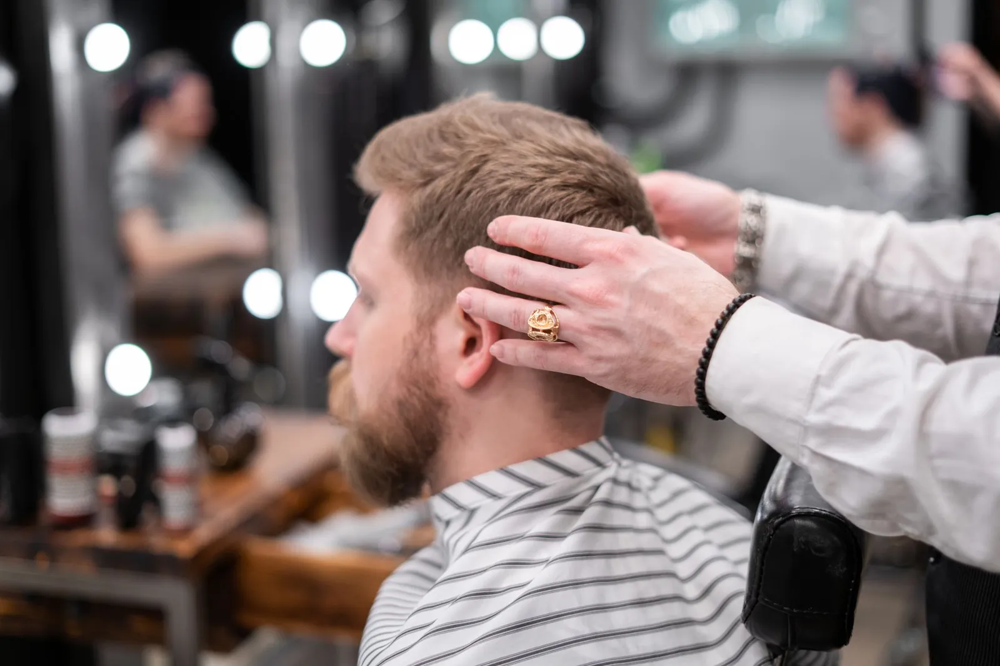
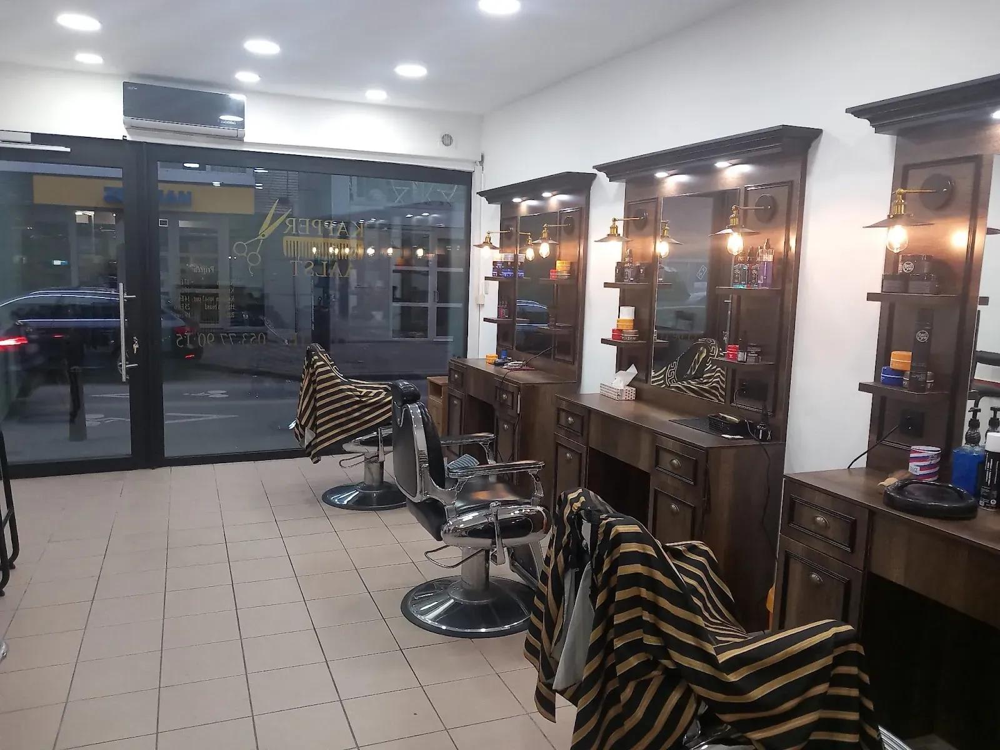
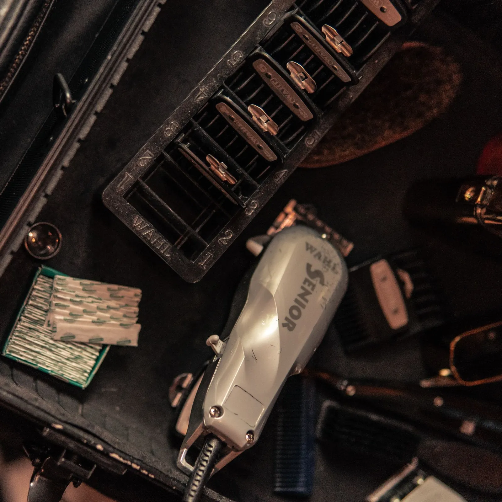
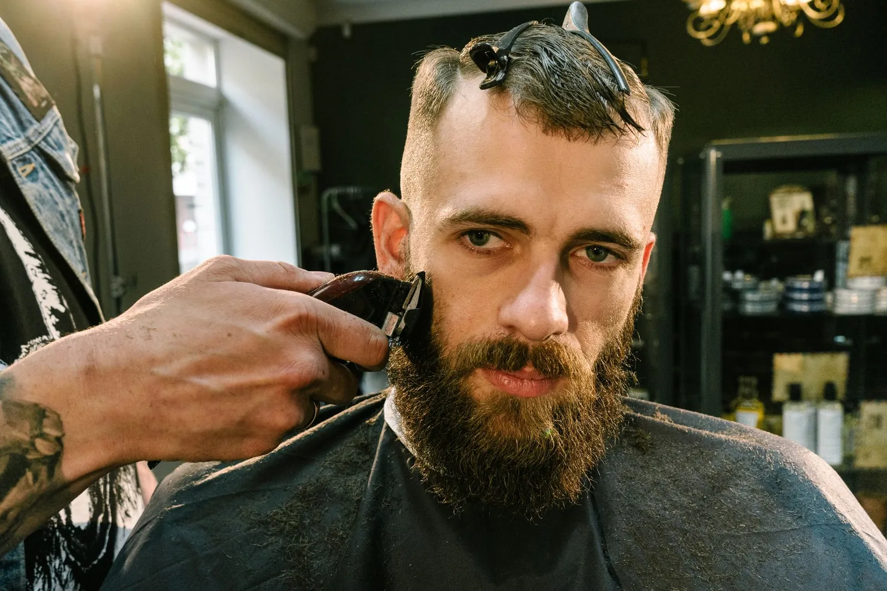
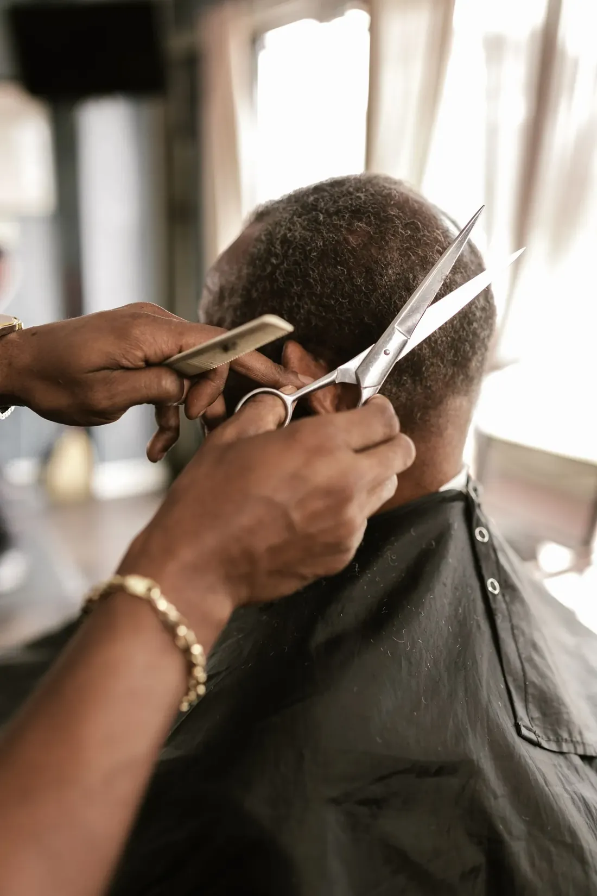
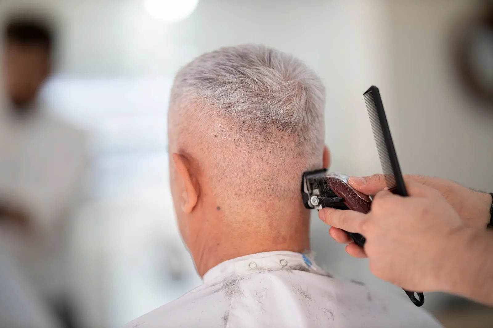
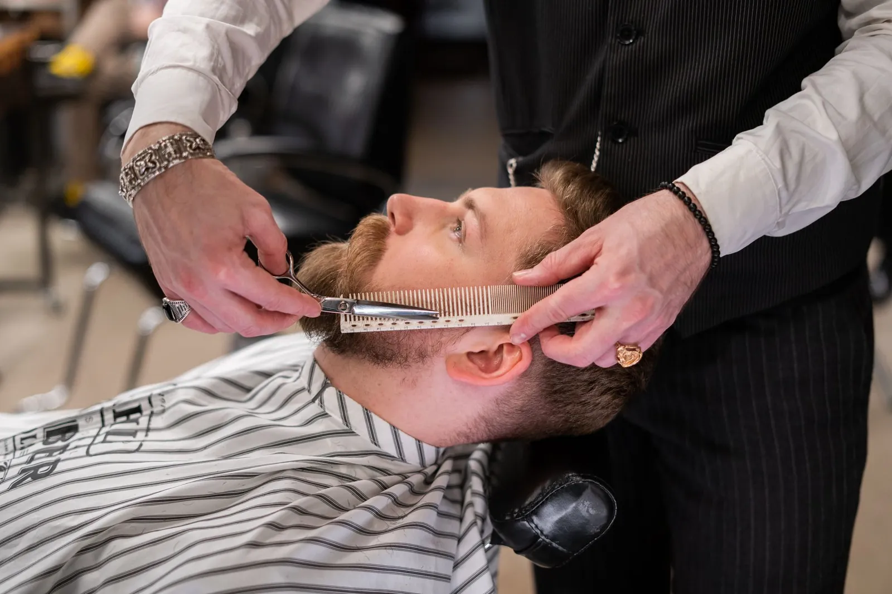
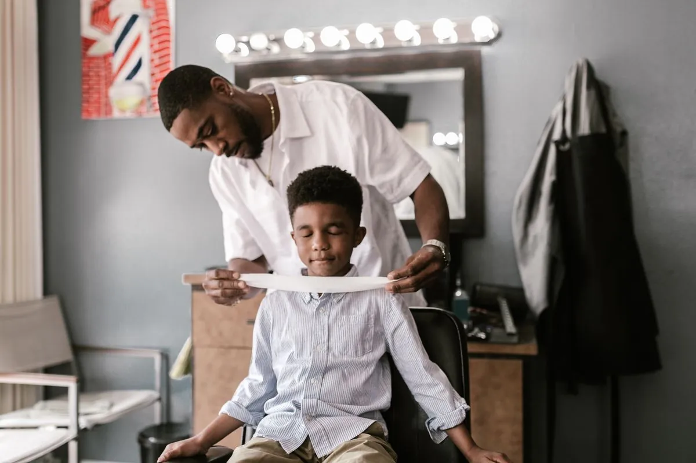
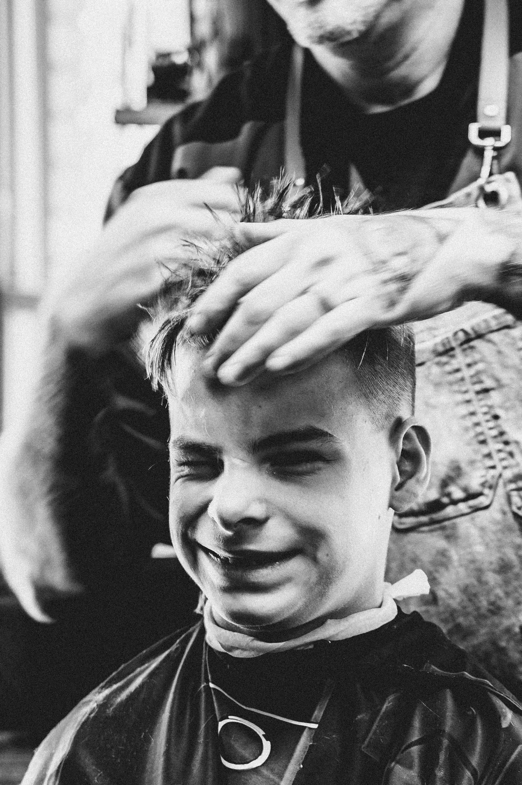
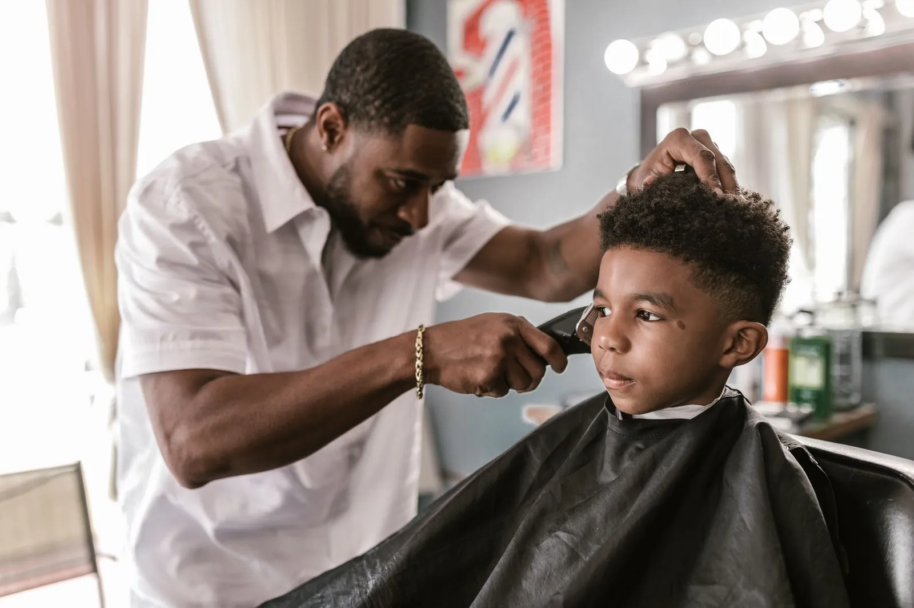

Fris geknipt, op jouw uur.
Bel of stuur een berichtje, dan krijg je een vast uur. Zo zit je meteen in de stoel en ga je buiten met een coupe die klopt.
41 Google-reviews Maandag tot zaterdag
9u tot 18u30

Donker hout, warm licht en je stoel staat klaar.
Spiegelkasten in donker hout met lampjes erboven, stevige kappersstoelen en de zwart-gouden kapmantels. Sinds de verbouwing zit je hier nog beter, en dat zeggen onze klanten zelf.
Je merkt meteen dat deze kapper zijn vak écht kent.
uit 41 reviews

Alles ligt klaarVan de eerste knip tot de lijn in je nek.
Geen ingewikkelde kaart. Je zegt hoe je het wil, of je toont een foto op je gsm, en wij zetten het om.

Knippen
Klassiek met de schaar of kort met de tondeuse. Bovenaan wat langer, aan de zijkant kort, of gewoon bijwerken.

Fade & contouren
Een zachte overgang aan de zijkanten en een strakke lijn in de nek en rond de oren.

Baard
Bijwerken, in vorm zetten en de lijnen op je wangen scherp maken. Gerust samen met je knipbeurt.

Kinderen
Ook de kleinsten zitten hier goed. We nemen de tijd, ook als het even wat langer duurt.

Benieuwd naar de prijzen? Die hangen aan het raam, of vraag het gerust even aan de telefoon.


Ook voor de kleinsten nemen we de tijd.
Een kinderhoofd vraagt wat meer geduld, en dat geduld hebben we. Ouders schrijven het zelf: hun zoon voelde zich hier van dag één op zijn gemak.
Sommige jongens zitten hier al sinds hun achtste in de stoel. Nu willen ze door niemand anders meer geknipt worden.
Wie hier één keer goed zit, komt gewoon terug.
Van papa tot zoon: veel klanten komen hier al jaren. Gemiddeld 4,8 op 5 uit 41 reviews op Google.
In drie stappen in de stoel.
We werken op afspraak. Dat is handig voor jou, want zo weet je precies wanneer je aan de beurt bent.
Bel of app
Zeg wat je wil laten doen, dan zoeken we samen een uur dat past.
Kom op je uur
Je stoel staat klaar. Mantel om, even overleggen, en we beginnen.
Frisse kop
We draaien de spiegel pas naar je toe als alles klopt. Tot de volgende keer!
0487 01 22 29 bellen of een berichtje, allebei goed
Tot binnenkort in de stoel.
Openingsuren
Op afspraak- Maandag9u tot 18u30
- Dinsdag9u tot 18u30
- Woensdag9u tot 18u30
- Donderdag9u tot 18u30
- Vrijdag9u tot 18u30
- Zaterdag9u tot 18u30
- Zondaggesloten